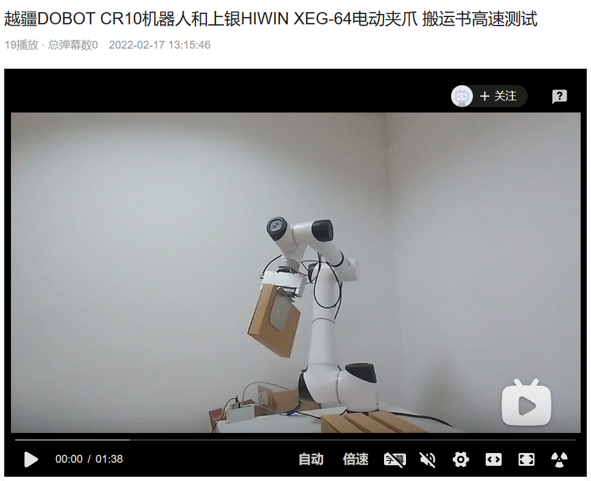
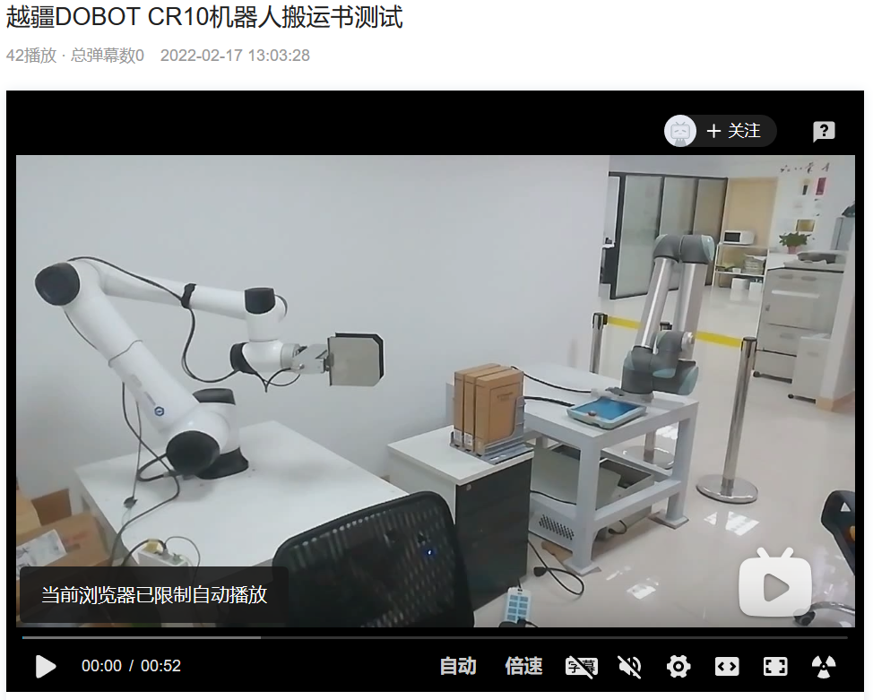

公司有个AGV+协作机器人的项目，用来在图书馆搬运书，因为书都是竖着放在分隔架中，需要夹持出来，这样就需要夹爪有足够的夹紧力保持书不掉下来，并且还不能将书夹坏，同时由于是在AGV上，不能采用气泵方式，所以就采用的可调节夹持力的电动夹爪。
前面项目采用的是大寰的AG95，这个夹爪设计的与协作机器人末端安装匹配，并且视觉上更好看。但由于夹持力不够，夹板表面贴的是毛皮之类的更光滑，抽出书时掉在地上。并且夹板用的铝板做的太厚，而两个书之间靠的太近，所以经常会由于精度问题撞到货架上。
本次实验就是采用更大夹持力的上银HIWIN XEG-64电动夹爪（安在协作机器人上是有点难看），并且夹板采用的是3mm的不锈钢切割，面积也较实际项目中大了约4倍，夹持力大了约2倍，夹板表面贴了糙面橡胶颗粒带增加了约20倍的摩擦力。
测试机器人在高速运动中，夹持好书后，朝各方向抛扔，看是否会有移位或者掉落。
最终实验结果表明，需要两个条件才能保证物体不移位：
1. 夹板长度需大于物体的1/2，以便保证物体重心在夹板内，否则物体会有倾斜。(当然也可以增加侧向挡位，但是会造成夹板进入缝隙时需要正好达到物体边，这对不规则排放的物体提高了视觉深度方向精度的要求，从而提高了成本)。
2. 夹板表面一定针对相应物体选择合适的贴面，以提高摩擦力，否则再高的夹持力会导致物体夹坏。
具体测试视频请访问以下网址：
(1). 越疆DOBOT CR10机器人和上银HIWIN XEG-64电动夹爪 搬运书高速测试

(2). 越疆DOBOT CR10机器人搬运书测试
